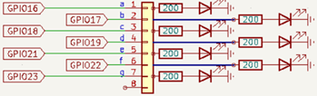
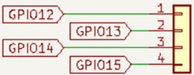
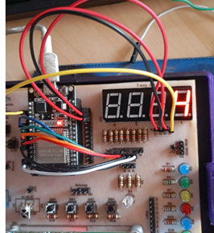

Objetivo. Aprender a utilizar un display de 7 segmentos de cátodo común para mostrar números del 0 al 9. Implementar el método randint de la clase random para generar números aleatorios. Configurar pines GPIO para seleccionar y controlar segmentos individuales del display.
Procedimiento.
-
Conectar el ESP32 al entrenador QMT-020 y cablear los pines de selección del display (d1-d4) y
de los segmentos (a-g) según el esquema proporcionado.



- Encender únicamente el Display 1 para mostrar el número generado.
- Escribir el código proporcionado en Thonny, utilizando random.randint(0, 9) para obtener el número aleatorio.
-
Ejecutar el programa y observar el número en el display.
from machine import Pin import time import random # Para la selección del display. d1 = Pin(12,Pin.OUT) d2 = Pin(13,Pin.OUT) d3 = Pin(14,Pin.OUT) d4 = Pin(15,Pin.OUT) # Se va trabajar con el disply 1 d1.on() d2.off() d3.off() d4.off() numero = random.randint(0, 9) print(numero) leda = Pin(16,Pin.OUT) ledb = Pin(17,Pin.OUT) ledc = Pin(18,Pin.OUT) ledd = Pin(19,Pin.OUT) lede = Pin(21,Pin.OUT) ledf = Pin(22,Pin.OUT) ledg = Pin(23,Pin.OUT) while True: if numero == 0: leda.off() #1 ledb.off() #1 ledc.off() #1 ledd.off() #1 lede.off() #1 ledf.off() #1 ledg.on() #0 print("zero") if numero == 1: leda.on() #0 ledb.off() #1 ledc.off() #1 ledd.on() #0 lede.on() #0 ledf.on() #0 ledg.on() #0 if numero == 2: leda.off() #1 ledb.off() #1 ledc.on() #0 ledd.off() #1 lede.off() #1 ledf.on() #0 ledg.off() #1 if numero == 3: leda.off() #1 ledb.off() #1 ledc.off() #1 ledd.off() #1 lede.on() #0 ledf.on() #0 ledg.off() #1 if numero == 4: leda.on() ledb.off() ledc.off() ledd.on() lede.on() ledf.off() ledg.off() if numero == 5: leda.off() ledb.on() ledc.off() ledd.off() lede.on() ledf.off() ledg.off() if numero == 6: leda.off() ledb.on() ledc.off() ledd.off() lede.off() ledf.off() ledg.off() if numero == 7: leda.off() ledb.off() ledc.off() ledd.on() lede.on() ledf.on() ledg.on() if numero == 8: leda.off() ledb.off() ledc.off() ledd.off() lede.off() ledf.off() ledg.off() if numero == 9: leda.off() ledb.off() ledc.off() ledd.off() lede.on() ledf.off() ledg.off() time.sleep(0.1)
Actividades sugeridas.
- Mostrar el número aleatorio en el Display 2, Display 3 y Display 4.
- Desplazar el número aleatorio por los displays 1, 2, 3 y 4 secuencialmente.
- Tomar 4 números aleatorios y presentarlos simultáneamente en los 4 displays.
- Guardar el programa en la carpeta local del computador.
- Guardar el programa directamente en el microcontrolador y ejecutarlo sin conexión al PC.